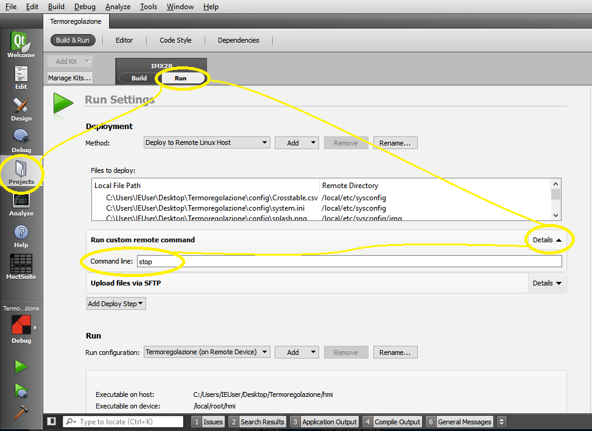
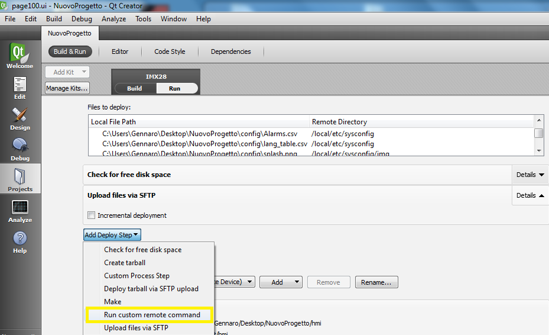
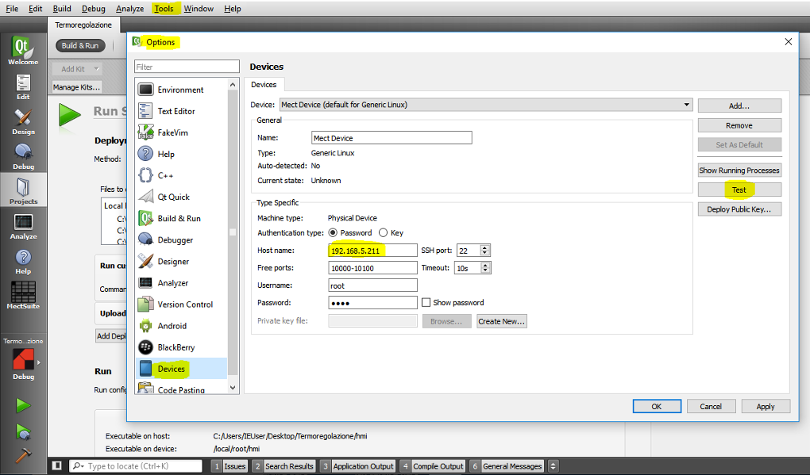
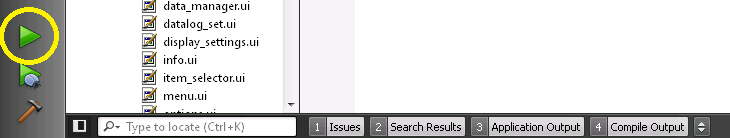

Um Ihre Anwendung vom PC auf das Panel zu übertragen, müssen Sie das Panel über ein Netzwerkkabel mit dem PC verbinden oder überprüfen, ob beide miteinander verbunden sind.
Wenn Sie die ausführbare Datei (Deploy) zum ersten Mal an das Panel senden möchten, wählen Sie “Projects” → “Run” und schreiben Sie “stop” (alle Kleinbuchstaben) in “Run custom remote command” :

Es ist ratsam, im “Release”-Modus zu arbeiten, da die Anwendung für das Ziel weniger “schwer” ist.

Bei Bedarf können Sie unter “Tools → Options → Devices” eine andere IP-Adresse oder ein anderes Passwort für das Ziel angeben.

Es ist ratsam, einen Test durchzuführen, um sicherzustellen, dass eine Verbindung zwischen dem PC und dem Panel besteht; drücken Sie dazu die Taste “Test” auf der rechten Seite der obigen Abbildung.
Nach der Einstellung der Parameter können Sie das Projekt an das Gerät senden, indem Sie auf das Dreieck in der Abbildung klicken (siehen Sie gelber Kreis):
